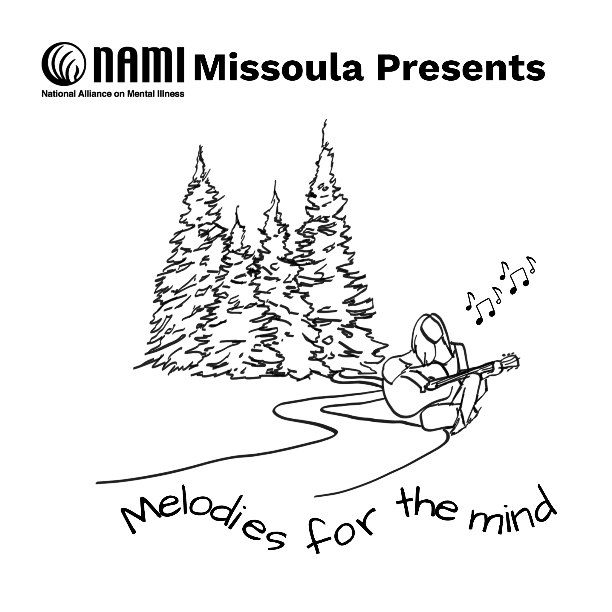
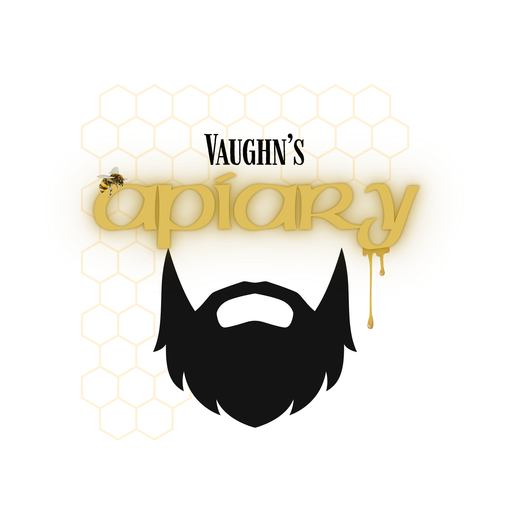

Creating the Perfect Logo
Inspiration, Design, and Editing: My Creative Process
8/19/2026 by Melissa Hundley

I've created a few logos in my time as a designer and with every
one, I find learn something new about my creative process. It all
started with creating my own logo. I figured that if I was going
to start a design studio, that I should be the one to design my
logo…that attitude created a huge block for me. I hadn’t really
created a logo before…at least nothing official, but I really
didn’t know where to start. My business name was simple…just my
initials and design studio. On top of that, my business isn’t just
about calligraphy and creative design, I also am a web developer
and tech professional. So I went to the one tool that I was
definitely not comfortable with in design…my iPad. I opened
Procreate and grabbed my Apple Pencil and started writing my
initials in script. I probably drew these three letters for an
hour and never liked the result. I started questioning everything!
The next thing I did was to write them quickly (kind of like
signing my name…only slightly more legible). I found I liked that
approach more than the others. I tried a few different things like
adding flourishes and trying to balance it and came up with one
that I really liked. From there, I exported the image file to
Canva and added the very simple text underneath to create my logo.
There’s nothing really complicated about it, but I loved that I
could say, “that’s my handwriting.” It’s simple, it may change
over time as my business grows, but for a first logo, I’m pretty
happy with it!

Let’s jump ahead several months and I am officially open for business. My website is up, my social media accounts are up and being posted to and my best friend texts me and asks “do you do logos?” To be completely honest, I really wanted to say no…but I also knew I could use the work…so I answered “sort of…I mean, I did my own logo.” A few texts and questions later, and I had a small brief of what she was looking for (this was for an organization she is a part of). They are doing a mindfulness walk this fall, and wanted a logo for the event. I had the elements they wanted so I jumped into Canva and started looking for image and reference ideas. I found a few elements that I liked, but didn’t love. So I imported them over to Procreate and simplified a couple of the images I liked. Moving back to Canva, I started compiling these simplified elements and added the text trying to find fonts that mirrored the feel for what they were looking for. I didn’t have a solid timeline, but she mentioned they needed it quickly, so within the hour, I had sent her a very rough mockup of my idea (I don’t usually get to work that fast, but the timing worked out this time). Before the evening was over, she sent me some general feedback from the board, and I dove in and gave them some more options on things. We went back and forth on a few details before they finally approved the design. In this process, I learned to stand up for what I know. At one point, they wanted to add another block of text in the logo. I knew this was going to be too much, and make things really difficult to read, so I let them know. Just when I thought they were going to ask to see it anyway, they agreed that it would be too much! While I would say this logo isn’t something I’d design for me, I still found little ways to add elements of my design style in it…I now understand why judges on Project Runway would lecture the designers if they couldn’t see the designer in their designs even if it was something way out of their wheelhouse.

This last logo might be my favorite! I have a neighbor that has a honeybee hive (or apiary as I’ve recently learned it is called). He brought us some honey a week or so ago with duct tape on the lid that said “Vaughn’s Apiary harvested 8/1/26.” I didn’t think much of it at the time, but in a conversation a few days later, I thought I should create a logo for him. I wasn’t asked to, but he’s very nice, and that jar of honey is not only delicious, but a good size. This logo was a bit different in that I didn’t draw any piece of it. I went to Canva looking for inspiration again, and found a silhouette of a beard that reminded me of Vaughn’s beard. So I started playing. Looking at font pairings and different bee-related elements and started piecing things together. I had no parameters to follow, no client wants or recommendations (he didn’t even know I was doing this). The end result is something I really like. His birthday is coming up, and so our little community decided to put together a little birthday present for him so I printed up a few sheets of labels with his new logo on it so he can put those on jars of honey. Sometimes creativity without any parameters can be so overwhelming (at least for me). I like to be inspired before I sit down to design or create, but it doesn’t always work like that. Creating a logo for Vaughn was a good exercise for me because other than my name meaning Honey Bee, I’m not a huge fan of bees - my mom is severely allergic to honey bees, and I don’t like bugs or getting stung, but I gave myself permission to play in the context of bees and ended up with (at least in my opinion) a great logo! Here’s hoping my neighbor likes it as much as I do!